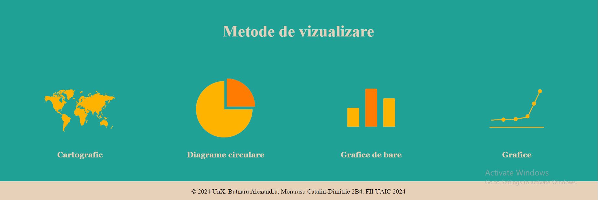
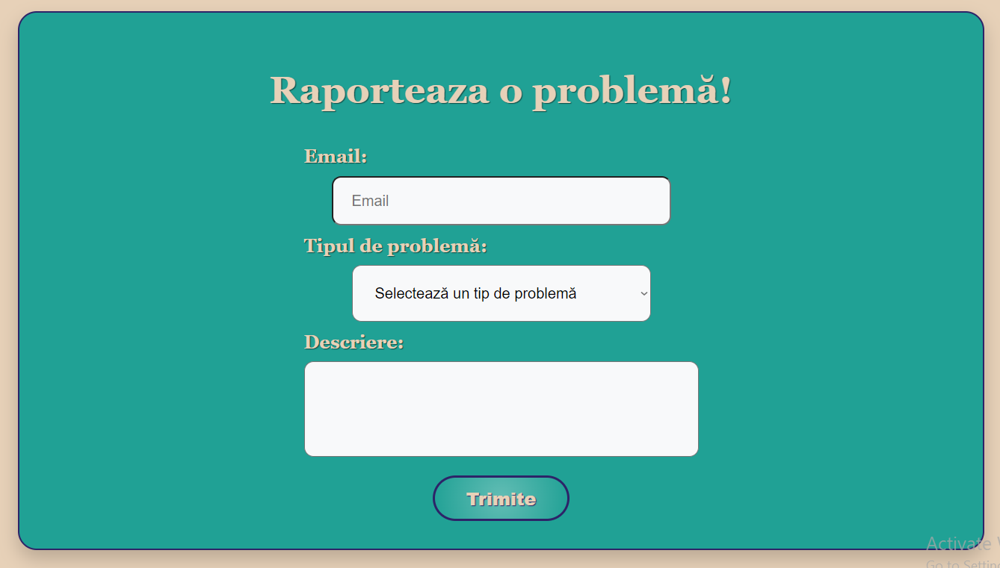

UnX (Unemployment Explorer)
Cuprins
1. Introducere
1.1 Scop
UnX (Unemployment Explorer) este o aplicație web dezvoltată de studenții menționați în secțiunea de Autori de la Facultatea de Informatică a Universității Alexandru Ioan Cuza. Scopul acestui document este acela de a prezenta o descriere detaliată a funcționalităților, precum și de specifica cerințele aplicației web. Această aplicație va oferi utilizatorilor posibilitatea de a vizualiza și compara pe diferite criterii datele publice referitoare la șomajul din România pe ultimele 12 luni. Statisticile pot fi vizualizate sub forma de grafice, diagrame circulare, grafice de bare, precum și printr-o reprezentare cartografică pe harta României.
1.2 Convenția documentului
- Acest document urmează șablonul de documentație a cerințelor software conform IEEE Software Requirements Specification.
- Textul îngroșat este folosit pentru a defini noțiuni personalizate sau pentru a accentua concepte importante.
1.3 Publicul țintă
Acest document este destinat profesorilor, studenților sau dezvoltatorilor, însă orice utilizator, indiferent de cunoștințele lor tehnologice, poate consulta secțiunile de Interfeța utilizatorului și Caracteristici ale sistemului pentru a obține o mai bună înțelegere a ceea ce oferă aplicația.
1.4 Scopul Produsului
Scopul aplicației este acela de a oferi utilizatorilor acces la date actualizate si relevante despre șomajul din România. Prin intermediul acestei aplicații, utilizatorii pot explora și înțelege evoluția pieței muncii în diferite regiuni, sectoare și grupuri demografice. UnX oferă instrumente interactive și vizualizări grafice, utilizatorul având posibilitatea de filtra datele pe propriul plac, pentru a analiza și interpreta datele legate de șomaj, permițând utilizatorilor să identifice tendințe, să înțeleagă factorii care influențează fluctuațiile ratei de șomaj.
1.5 Bibliografie
- Buraga Sabin-Corneliu, Site-ul Tehnologii Web, FII UAIC
- H Rick. IEEE-Template - GitHub
2. Descriere Generală
2.1 Perspectiva produsului
UnX (Unemployment explorer) este o aplicație dezvoltată în cadrul cursului de Tehnologii Web, menită să ofere posibilitatea de a vizualiza date și statistici despre rata șomajului din România din ultimele 12 luni.
2.2 Funcționalitățile produsului
Fiecare utilizator va avea acces la urmatoarele funcționălități:- să consulte pagină "Acasă" pentru a vedea o scurtă descriere a site-ului
- să acceseze pagina "Vizualizator" pentru a vedea datele despre rata șomajului
- în cadrul paginii "Vizualizator", să selecteze perioada din care să fie afișate datele
- în cadrul paginii "Vizualizator", să selecteze criteriul după care să fie afișate datele
- în cadrul paginii "Vizualizator", să selecteze Județele din care să fie afișate datele
- în cadrul paginii "Vizualizator", să selecteze tipul de vizualizare a datelelor
- în cadrul paginii "Vizualizator", să exporteze rezultatul primit
- să acceseze pagina "Asistență" pentru a realiza un raport în legătura cu problemele tehnice sau a datelor și corectitudinea acestora
2.3 Clase și caracteristici ale utilizatorilor
2.3.1 Utilizator principal
Utilizatorii pot fi:
- Oameni care doresc sa vizualizeze datele legate de șomaj pentru interesul propriu
- Studenți care doresc să folosească datele pentru proiecte sau lucrări de licență
- Profesori care doresc să folosească datele pentru cursuri sau seminarii
- Publicații care doresc sa realizeze un reportaj pe baza rezultatelor
2.3.2 Caracteristici
Utilizatorii au acces la toate paginile și funcționalitățile site-ului. Pot vizualiza datele în diferite moduri(grafice, diagrame circulare, grafice de bare și cartografic pe o hartă a României) și pot exporta rezultatele în format CSV, PDF sau SVG. totodată utilizatorii pot raporta eventualele probleme tehnice sau cele ce au legătură cu corectitudinea datelor pe pagina ”Asistență”.
2.4 Mediul de operare
Produsul dezvoltat poate fi utilizat pe orice dispozitiv cu un browser web care suportă HTML5, CSS și JavaScript.
2.5 Documentația pentru utilizator
Utilizatorii pot consulta acest document pentru explicații detaliate despre funcționalitățile aplicației web.
3. Interfețele aplicației
3.1 Interfața utilizatorului
Mai jos, puteți vedea o prezentare generală a fiecărei pagini a aplicației și funcționalităților pe care le oferă:-
- Aceasta reprezintă meniul de navigare către fiecare pagina a aplicației. Acesta este prezent pe fiecare pagina și are o poziție fixă indiferent de scroll.
- Pagina de acasă
-
- Pagina are rolul de prezenta o scurtă descriere a site-ului și modalitățile de vizualizare a datelor
- 
- Pagina de vizualizare
-
- Pagina oferă posibilitatea utilizatorului datele despre rata șomajului din România pe ultimele 12 luni. Mai intâi acesta alege perioada pe care vor fi prelucrate datele
- Apoi utilizatorul alege criterul după care vor fi afișate datele
- Urmeaza slectarea județelor din care vor fi preluate datele.
- Utilizatorul poate alege tipul de vizualizare a datelor
- În urma aplicării filtrelor, utilizatorul va primi rezultatul sub forma de grafic, diagramă circulară, grafic de bare sau reprezentare cartografică pe harta României, în căsuța destinată afișării rezultatelor.
- La final utilizatorul poate exporta rezultatul primit

- Pagina conține un formular pe care utilizatorii îl pot completa pentru a raporta o problemă tehnică sau o problemă legată de corectitudinea datelor.
- 
3.2 Interfața Hardware
Acest produs nu necesită interfețe hardware, funcționând pe orice platformă (calculatoare, laptopuri, telefoane etc.), care are instalată un browser.
3.3 Interfața Software
Cerințele minime de software includ un browser funcțional, compatibil cu HTML5 și cu JavaScript.
3.4 Interfața de comunicare
Aplicația necesită o conexiune la internet. Standardul de comunicare care va fi utilizat este HTTP.